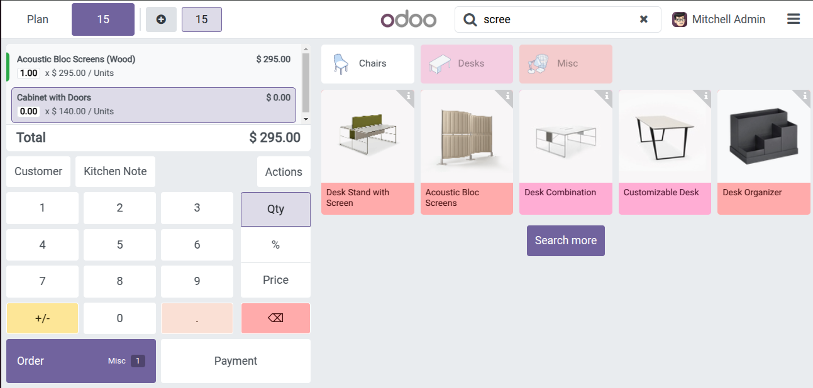
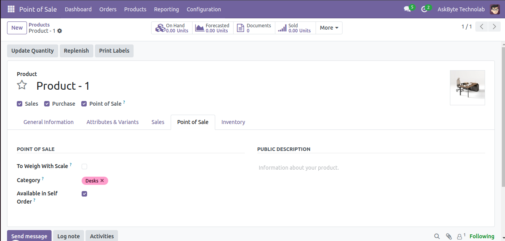
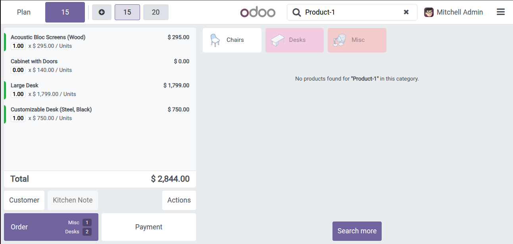
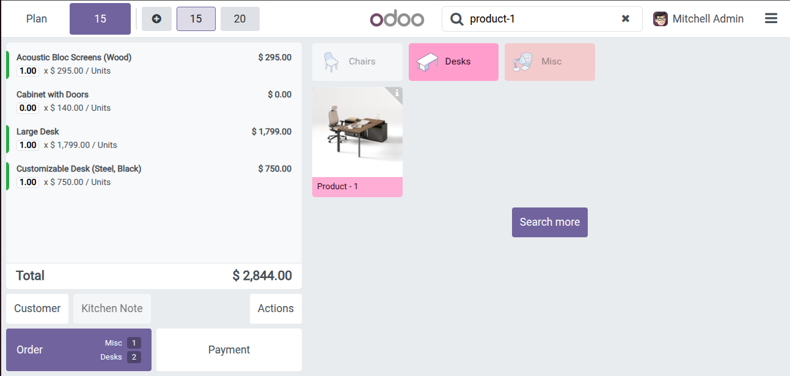

The POS Product Filter & Search by Category module enhances your Odoo Point of Sale system by allowing users to efficiently filter and search products by category. This improves checkout speed and customer satisfaction.




For inquiries, assistance, or feature requests, email us at: askbytetechnolab@gmail.com